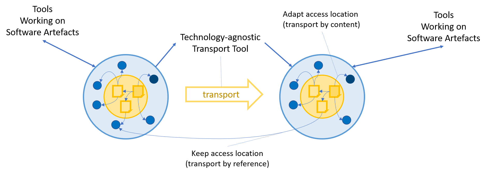
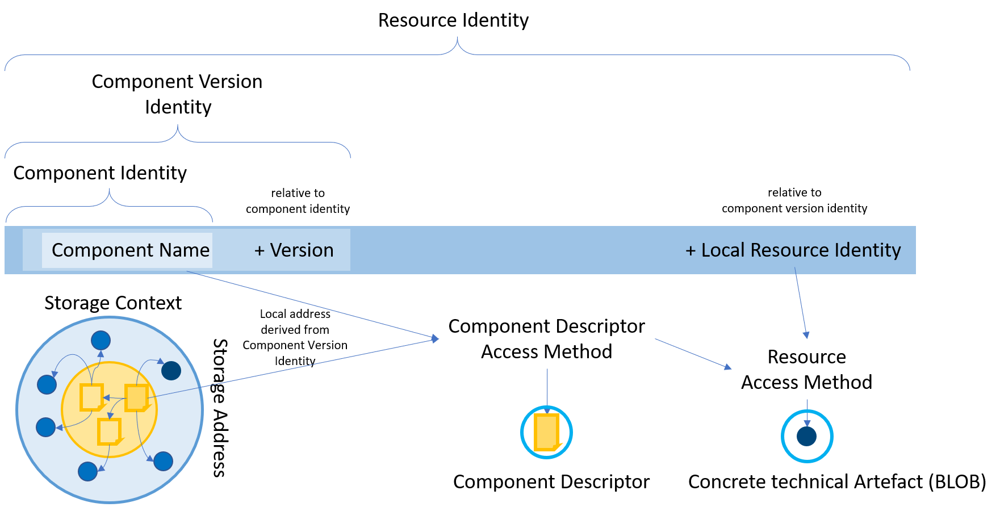

Motivation
Operating software installations both for Cloud and on-premises covers many aspects:
how, when and where are the technical artefacts created
how are technical artefacts stored and accessed
which technical artefacts are to be deployed
how is the configuration managed
when are technical artefacts deployed
where and how are those artefacts deployed
which other software installations are required and how are they deployed and accessed
The overall problem domain has a complexity that makes it challenging to be solved as a whole. However, the problem domain can be divided into two disjoint subdomains:
production of software artefacts
processes acting on those artefact sets like compliance processes, transport, deployment and lifecycle management of installations
The elements transitioning between those two subdomains are synchronisation data (“when things should happen”) and technical artefacts and their purposes.
By standardising those elements, it is possible to decouple those two aspects. This allows to split the overall complexity into smaller parts. The involved artefacts are basically some kind of source of truth, all processes during a software lifecycle finally cooperate on these elements, they are generated by a build, matter of compliance assessment, the have to transported and deployed, and finally the data controlling processes like deployment can be expressed by artefacts, also. Because of this, it seems to be a good idea to standardize the description and handling of software artefacts. By this, independent tools can cooperate on such a view to software and the overall complexity can be reduced, .
When dealing with aspects of software or software artefacts like delivery, life cycle management or security aspects it is important to reliably build the bridge between uniquely denoting or identifying software or software parts and the real, effective technical content behind the naming scheme. This must be combined with the possibility to describe the access of the real content just by the naming scheme in any kind of storage environment, be it public or fenced local ones, and a reliable way to transport software among such environments. At the same time not only the sole executable artefacts must be considered, but all other kinds of meta data or accompanying information used to describe the artefacts, their meaning, deployment and lifecycle aspects.
Although container based software systems, especially Kubernetes, are increasingly displacing other other runtime models there will for sure always be competing or specialized or even new upcoming ones in the future, which must potentially be commonly described in one closed model. Therefore such a software description model must not be related to dedicated technologies, be it content types, runtime models or tools working the the denoted content.
The Open Component Model will offer a sound common technology-agnostic basis to denote and describe the access of any kind of software by grouping typed artefacts and establishing a hierarchical naming scheme, which is applicable for all content that can reliably represented as blobs.
Like the today’s generic file system models it can be used to store and access any kind of data in any suitable repository or even archives or regular file systems.
It acts as a common scheme for any kind of tool that can interpret or deal with the typed artefact blobs with its own semantic to fulfill its tasks. The common naming scheme allows to correlate artefacts described by the model with other tool specific data at API level and therefore enables the cooperation of decoupled, independent tools by always keeping the connection to the single truth, the artefacts and artefacts groups they deal with.
Establishing a common, technology-agnostic and extensible model to describe software and its artifacts provides software developers, software vendors, and their partners with a unique way to consistently build, deliver and deploy compliant software, based on any technology, to any environment.
Core Concepts
Components in OCM are semantical entities with a certain semantical focus, as part of a software product. They are typically built from Sources, which are being conciously developed.
They consist of a set of (component) versions. Each version is described by a Component Descriptor, which describes the included set of artefacts. Component Descriptors are stored in a Component Repository in a standardized way. Within such a component repository, component descriptors are addressed by their component name and version.
By separating the storage locations (component repository) from the component version identity, in combination with a defined addressing scheme, it is possible to access component descriptors uniquely in any component repository, in a location-independent manner. This can be leveraged to replicate component descriptors and the described artefacts between component repositories.
Each of the artefacts declared in a Component Descriptor has an identity, an access description and a type. Artefact identities can be used to reference an artefact in the context of the declaring component descriptor. The Artefact type defines how the artefact is to be interpreted. The access Description defines from where the artefact can be retrieved.
When replicating component descriptors and their artefacts, the artefacts’ access descriptions may be changed. However, artefact types and artefact identities always remain unchanged.
The Open Component Model can roughly be compared to a filesystem “living” in an arbitrary storage (e.g. a blobstore, oci-registry, archive, ..).
Starting from an arbitrary component repository used as root repository it is possible to access any artefact described by the component model as long as the dedicated component version has been imported into this repository. The dedicated component repository together with the component version identity allows to access the component descriptor which then is used to determine the access for dedicated artefacts given by their local identity. This way the component respository acts as composed filesystem with fixed top level folders, the components and their versions, followed by the artefact level, which then may point into any another (kind of) repository. Sub folders can be described by component version references described by component descriptors, which again feature a local identity in the describing component descriptor.
Scope Definition
The Open Component model intends to solve the problem of addressing, identifying, and accessing artefacts for software components, relative to an arbitrary component repository. By that, it also enables the transport of software components between component repositories.
Through the standardisation of structure and access to artefacts, it can serve as an interface to any operation or tool that needs to interact with the content. This allows for tools operating against this interface to be implemented in a re-usable, and technology-agnostic manner (examples being transport, compliance and security scanning, codesigning, ..).
Higherlevel functionality, such as deployment, or lifecycle-management aspects are out of the scope the Open Component Model targets. However, it acts as a container to host (access, transport, …) information for those processes. Data for such aspects (for example a deployment blueprint) can, be described by the Open Component Model as dedicated typed artefacts. This is equivalent to e.g. adding a Makefile into a filesystem. The filesystem does not “know” about the semantics of the Makefile (including, e.g. declared dependencies towards other files).
An example for such a tool is the Landscaper. With the Landscaper, a new open, technology-agnostic and extensible deployment control tool is established on top of this software description model. Based on deployment descriptions, the Blueprints, and additional artefact information taken from the component model, it orchestrates and configures desired states in a Kubernetes-like manner that are finally handled by type specific Deployers which control the actual technology-specific deployment steps. Based on a very small set of standard Kubernetes-based deployers, any other kind of deployer can be added as part of the deployment process to support deployments in any technical or even fenced environment. The complete data plane is maintained in a Kubernetes system and can be maintained by traditional GitOps processes configuring installations based on artefacts uniformly described by and accessed using the open component model.
The combination of both parts, the Open Component Model and the Landscaper makes complete heterogeneous scenarios, including the required software parts and their orchestrations, transportable among and executable in any local and independent repository landscapes, controlled by local GitOps processes.